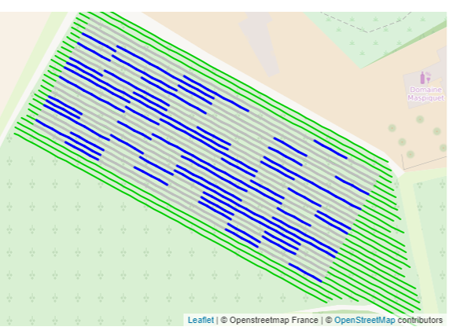
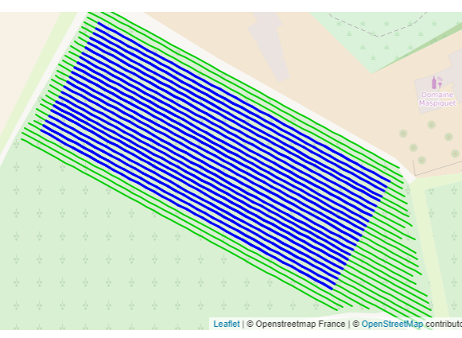

Disease assessment
Disease Assessment
207 experimental units means a lot of disease observation to do ! what is the best compromise between time spent and precision of observations ?
Manual scouting
In spring, at phenological stage BBCH 53, a mapping of “flag shoots” symptoms of powdery mildew was realized.
At BBCH 77, we did 2 manual assessement of powdery mildew , one following EPPO standard and the other one in a “FAST” mode:
| EPPO Standard | FAST assessment |
|---|---|
| % of bunch with powdery mildew | Class [0-5] of powdery mildew on bunches |
|  |  |
|
|
AI assessment
We also tested the recognition by artificial intelligence of downy mildew symptoms on images taken mid-july by drone in partnership with the company Chouette.

Disease mapping
Disease assessments can be viewed on the Figure 1 below.